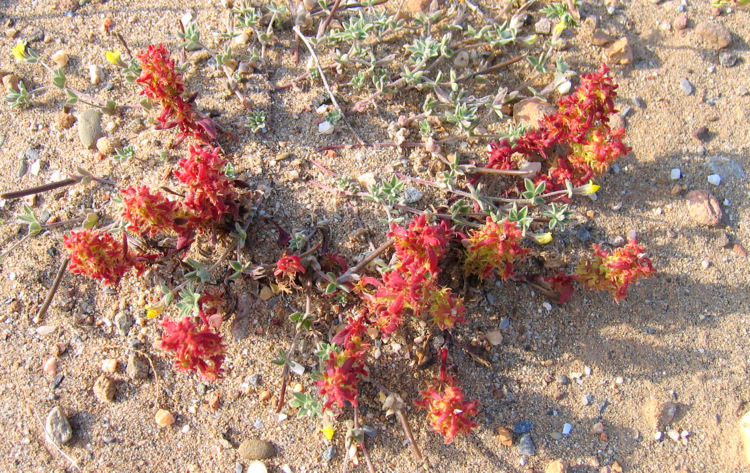
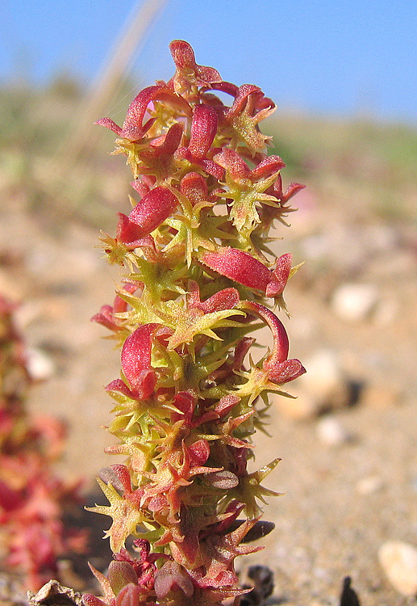
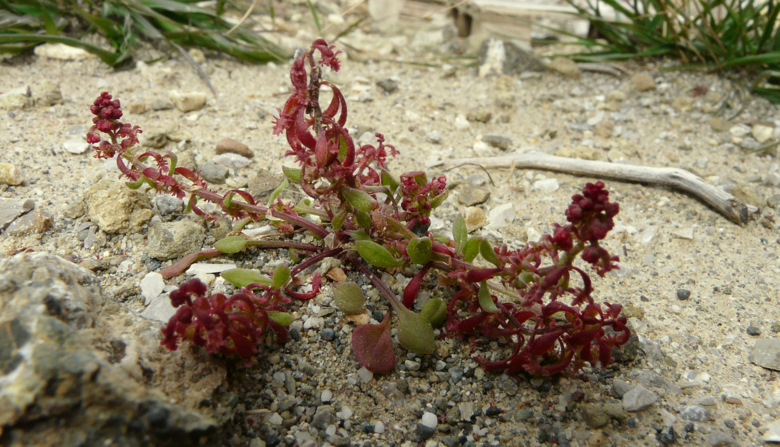
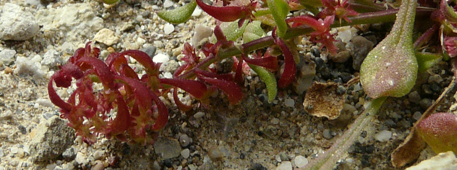
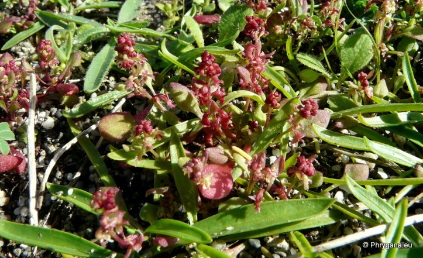
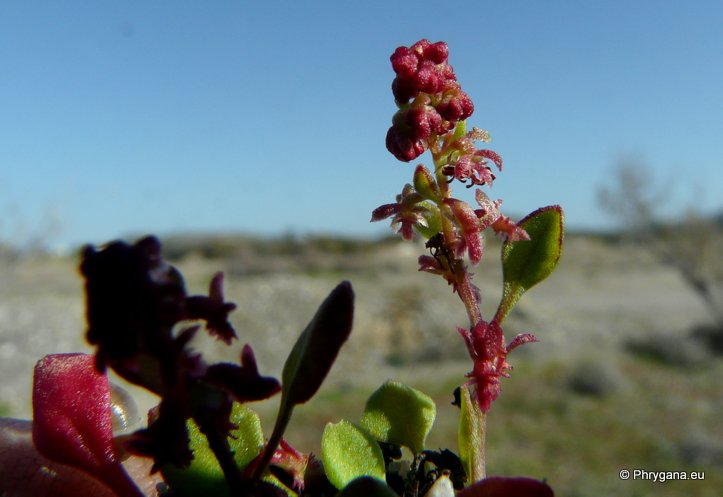
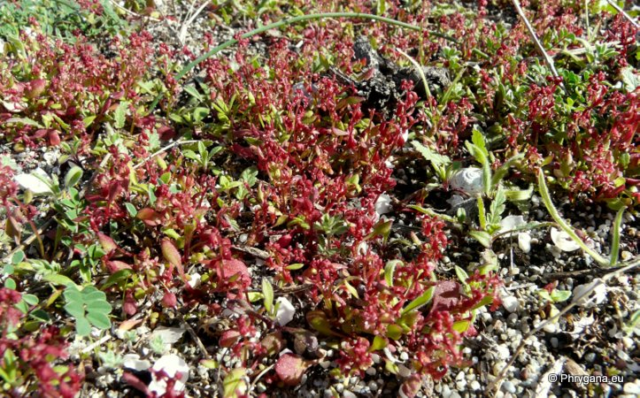

| PHRYGANA | Fauna | Flora | Galles | liste des espèces |
contact -
info - commentaires phrygana1 (at) gmail.com |
| Particularités crétoises | nouveautés | Mines | ressources naturelles |
| Rumex bucephalophorus L. subsp. gallicus (STEINH.) RECH. f. |
| 39 | Flora | POLYGONACEAE | Rumex L. |
 Rumex bucephalophorus subsp. gallicus Giorgiopouli 09 avril 2006 |
| Plante généralement petite, souvent teintée rougeâtre. | |
| Feuilles: feuilles basilaires pétiolées, spatulées à ovales-lancéolées. | |
| Tiges parfois nombreuses, arquées-ascendantes. | |
| Fleurs: verdâtres à rougeâtres, groupées par 2 - 3 en petits glomérules. | |
| Fruit: une capsule de +- 1.3 - 1.7 mm portée par un pédicelle recourbé | |
| Hauteur: 3 - 10 (-20) cm | Type biologique: thérophyte |
| Floraison: (janvier-) février mars avril mai | |
| Altitudes: 0 - 1500 m | |
| Statut en Crète: indigène -- native | |
| Biotopes en Crète: sables maritimes, sols nus, lieux rocailleux calcaires, pierriers, dunes. | |
| Distribution: Région méditerranéenne orientale (Région égéenne) | |
|
 Rumex bucephalophorus subsp. gallicus Giorgiopouli 09 avril 2006 |
 Rumex bucephalophorus subsp. gallicus Melambes (Agios Giorgos) 17 février 2010 |
 Rumex bucephalophorus subsp. gallicus Melambes (Agios Giorgos) 17 février 2010 |
|
 Rumex bucephalophorus subsp. gallicus Tymbaki plage 20 janvier 2013 |
|
 Rumex bucephalophorus subsp. gallicus Tymbaki plage 20 janvier 2013 |
|
 Rumex bucephalophorus subsp. gallicus Tymbaki plage 20 janvier 2013 |
| 21 janvier 2013 |
| © paul fontaine -- © Phrygana.eu 2007 -- 2013 |